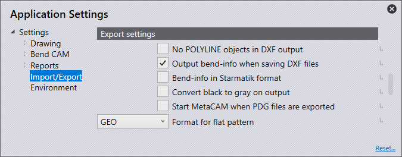

Impor/Ekspor
Pada bagian ini, kita akan membahas konfigurasi Pengaturan impor.

Klik ikon Pengaturan
 dari halaman beranda.
dari halaman beranda.

Pengaturan impor
Pada bagian ini, kita akan membahas konfigurasi Pengaturan impor. Klik ikon Pengaturan. Klik Impor/Ekspor dan navigasikan ke Pengaturan impor.

Unit untuk file DXF - Atur ke milimeter atau inci di sini.
Jarak maksimum antara + - Tetapkan nilai ini (0>1mm). Saat mengimpor komponen yang memiliki garis/busur yang lebih dekat dari nilai yang diatur, perangkat lunak akan secara otomatis menyatukannya saat impor.
Ketebalan pelat maksimum - Untuk mengenali komponen lembaran logam yang besar, nilai ambang batas pengenalan lembaran logam perlu ditingkatkan. (10>40 mm) Nilai ini secara otomatis diatur ke 25 mm atau 1 inci, tergantung pada satuan yang digunakan.
Unit titik - Opsi yang dipilih akan menentukan cara titik akan diimpor.
Impor semua - Semua poin akan diimpor dan ditampilkan.
Lewati titik pada polyline - Ini melewati semua titik yang terdeteksi pada polyline.
Lewati semua - Ini melewati semua poin saat impor, dan tidak ada yang ditampilkan.
Abaikan tingkat pada file DXF/DWG - Diagram DXF dan DWG biasanya dibuat pada layer yang berbeda. Dengan pengaturan ini, perangkat lunak akan mengabaikan layer tersebut dan memindahkan semua objek ke layer default.
Bongkar blok dalam gambar rancangan 2D - Memisahkan grup saat mengimpor
Konversi benda putih menjadi hitam - Aktifkan pengaturan ini untuk mengonversi objek putih menjadi objek hitam selama proses impor.
Warna yang lebih gelap selama impor DXF- Aktifkan pengaturan ini untuk menggelapkan objek berwarna saat mengimpor.
Hapus segmen duplikat - Aktifkan pengaturan ini untuk menghapus geometri duplikat yang ditemukan dalam komponen saat mengimpor.
Pengaturan DXF
Pada bagian ini, kita akan membahas konfigurasi Pengaturan DXF. Klik pada ikon Pengaturan. Klik Impor/Ekspor dan navigasikan ke Pengaturan DXF.

Sudut dalam file DXF adalah sudut buka. - Aktifkan pengaturan ini agar sudut-sudut dalam DXF ditangani sebagai sudut pembukaan.
Pengaturan ekspor
Pada bagian ini, kita akan membahas konfigurasi Pengaturan ekspor. Klik ikon Pengaturan. Klik Impor/Ekspor dan navigasikan ke Pengaturan ekspor.

Tidak ada objek POLYLINE dalam output DXF - Biasanya, kontur tertutup dihasilkan sebagai polyline saat mengekspor DXF. Beberapa sistem CAD tidak dapat memproses output ini. Dengan pengaturan ini, perangkat lunak akan menghasilkan output DXF dengan garis dan busur. File-file ini dapat dibaca di mana saja, tetapi file yang dibuat berukuran lebih besar dan hubungan antara garis dan busur akan hilang
Saat mengekspor file DXF, hasilkan informasi penekukan. - Aktifkan pengaturan ini agar DXF yang diekspor dapat ditampilkan dengan parameter tekukan.
Info penekukan pada format Starmatik - Aktifkan sakelar ini untuk menampilkan parameter tekukan dalam format Starmatik. Di sinilah entitas teks diposisikan tepat di tengah setiap baris yang akan menjadi garis tekuk.
Konversi hitam menjadi abu-abu saat output - Saat mengekspor data 2D, objek dalam file DXF secara default akan ditampilkan dalam warna hitam. Agar dapat mengenali objek dalam program CAD dengan lebih baik, objek akan ditampilkan dalam warna abu-abu dengan pengaturan ini.
Mulai MetaCAM dengan ekspor file PDG. - Aktifkan pengaturan ini agar file PDG secara otomatis dikonfigurasi untuk dibuka di MetaCAM
Format output pemrosesan - Saat mengekspor pola datar, ini dapat diatur ke format file GEO, DXF, atau PDG.
Konversi spline
Pada bagian ini, kita akan membahas konfigurasi pengaturan Konversi spline. Klik ikon Pengaturan. Klik Impor/Ekspor dan navigasikan ke pengaturan Konversi spline.

Konversikan spline selama impor - Tentukan di sini apakah konversi spline dinonaktifkan atau diatur untuk mengubah spline menjadi garis atau busur. Dalam kedua kasus tersebut, setiap spline akan dikonversi menjadi objek polyline tunggal yang berisi segmen garis atau segmen busur.
Perhitungan titik penyangga - Jumlah garis atau busur yang dihasilkan dihitung menggunakan salah satu dari dua mekanisme: pitch atau penyimpangan.
Panjang per segmen baris atau segmen busur - Jika Pitch dipilih dalam perhitungan Jumlah Node, atur panjang setiap segmen busur atau garis di sini untuk memecah spline menggunakan panjang langkah ini.
Deviasi maksimum selama perkiraan - Jika Penyimpangan dipilih dalam perhitungan Jumlah Node, atur penyimpangan maksimum yang diperbolehkan antara spline halus asli dan perkiraan garis atau busur di sini. Polyline dibangun dengan segmen sesedikit mungkin, dengan tetap mempertahankan kondisi kegagalan maksimum dalam batas ini.
Hapus modul
Pada bagian ini, kita akan membahas konfigurasi pengaturan Hapus modul. Klik ikon Pengaturan. Klik Impor/Ekspor dan navigasikan ke pengaturan Hapus modul

Abaikan komponen pemotongan - Saat menguraikan modul, mengaktifkan sakelar ini hanya akan menampilkan komponen lembaran logam dengan garis tekuk. Menonaktifkan akan menampilkan semua komponen dalam modul.
Tampilan komponen (mur insert, baut, bentukan punch…) - Gunakan pengaturan ini untuk memilih opsi yang akan ditampilkan saat menguraikan modul yang berisi komponen lain.
Padam - Hanya komponen lembaran logam yang ditampilkan setelah penguraian, sedangkan mur/baut lainnya tidak ditampilkan.
Tidak dikenali - Hanya komponen yang belum teridentifikasi dalam perangkat lunak yang ditampilkan.
All - Semua komponen ditampilkan.
Penetapan layer

Pada bagian ini, kita akan membahas konfigurasi Penetapan layer. Klik pada ikon Pengaturan. Klik Impor/Ekspor dan navigasikan ke pengaturan Penetapan layer.
Pada bagian ini, layer yang digunakan pada komponen yang diimpor ke dalam perangkat lunak dapat secara otomatis dipetakan ke fungsinya (penggunaan).
Jika komponen yang diimpor memiliki layer TANDA, ini dapat diatur untuk secara otomatis menggunakan layer Tanda dalam perangkat lunak.
Nama layer - Ini adalah nama layer yang jika komponen diimpor dengan nama ini, fungsi yang ditetapkan di panel 'Gunakan' akan digunakan.
gunakan - Ini adalah fungsi dari layer. Berbagai opsi yang tersedia adalah:
Standar - Ini adalah layer standar yang akan digunakan untuk CAM.
Alat bantu - Layer tambahan, tidak untuk digunakan untuk CAM.
Tandai - Semua entitas dalam layer ini akan ditandai, tidak dipotong.
Penanda kontak - Entitas titik yang menunjukkan posisi pendekatan laser.
Penanda sekuens - Penanda teks yang menunjukkan urutan kontur.
Pusat pembentukan - Tanda pusat untuk pembentukan (titik atau L kecil).
Bentuk jejak - Garis luar (jejak) suatu bentuk.
Menguap - Layer ini akan digunakan untuk membedakan pembakaran film.
Penandaan titik - Layer ini akan digunakan untuk kode QR.
Info - Ini adalah layer catatan saja.